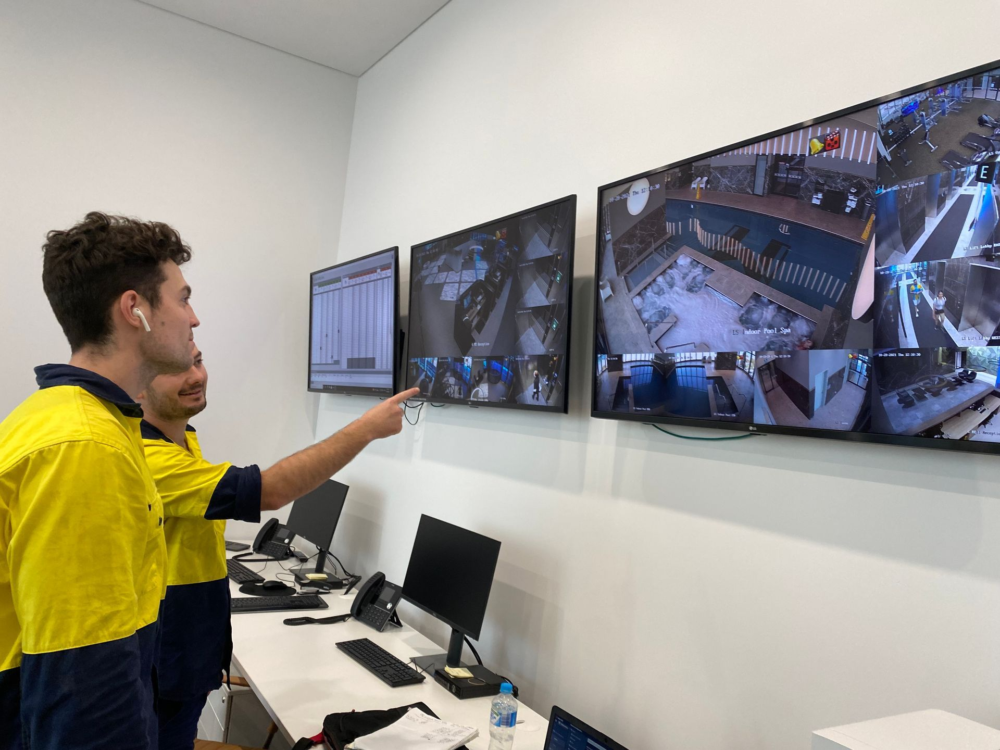
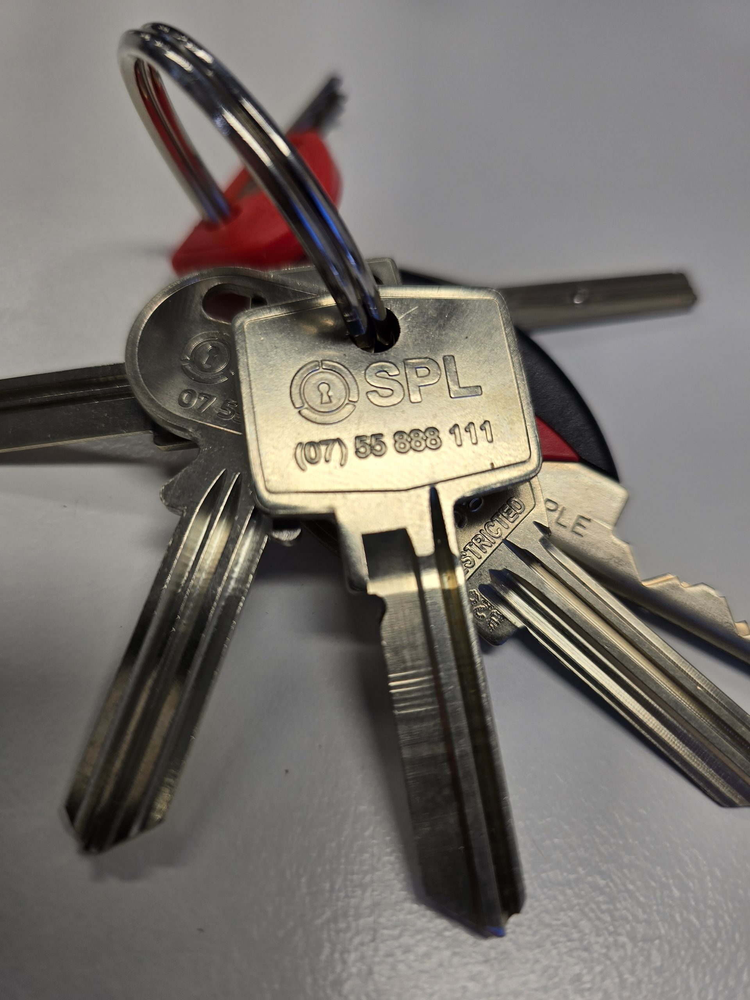
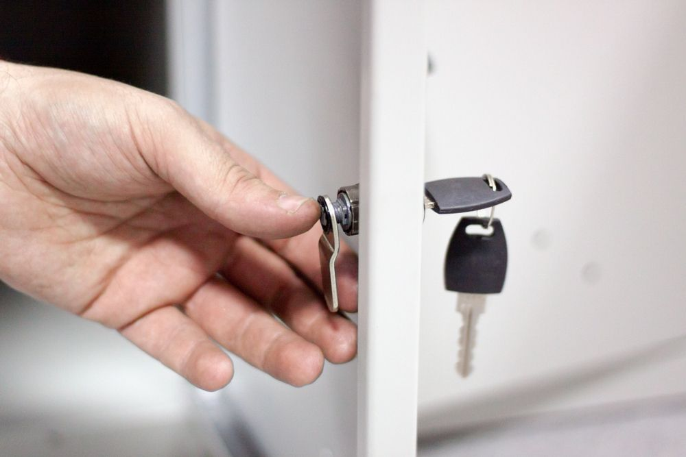
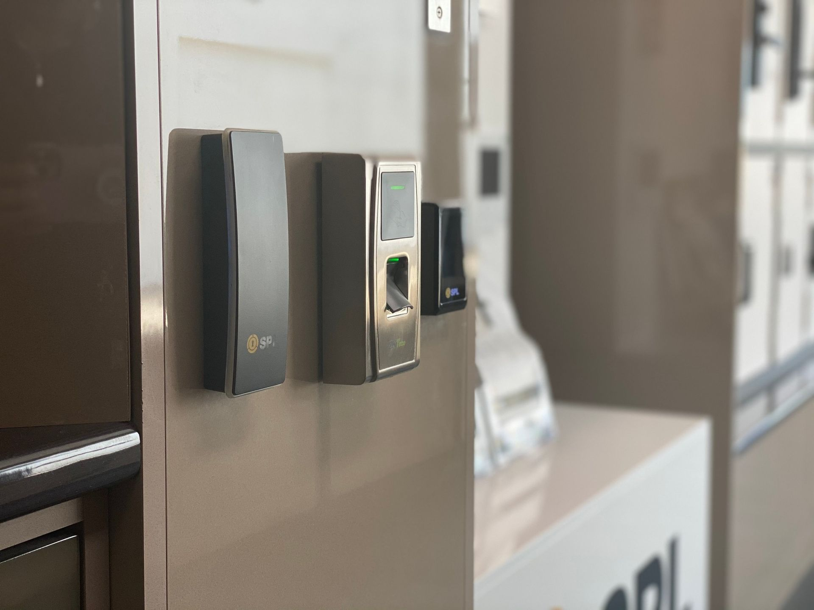
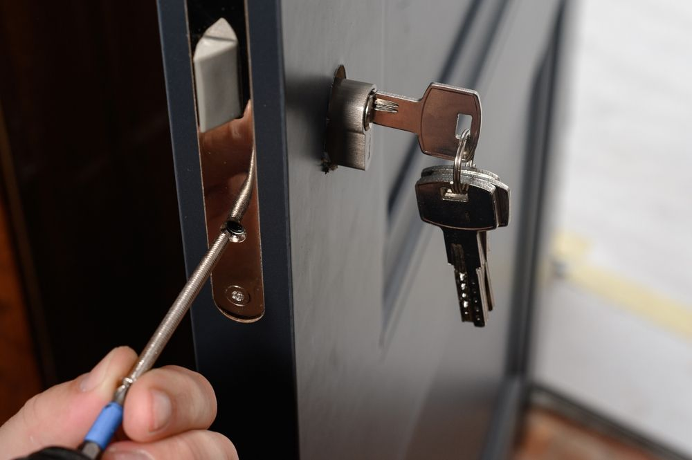
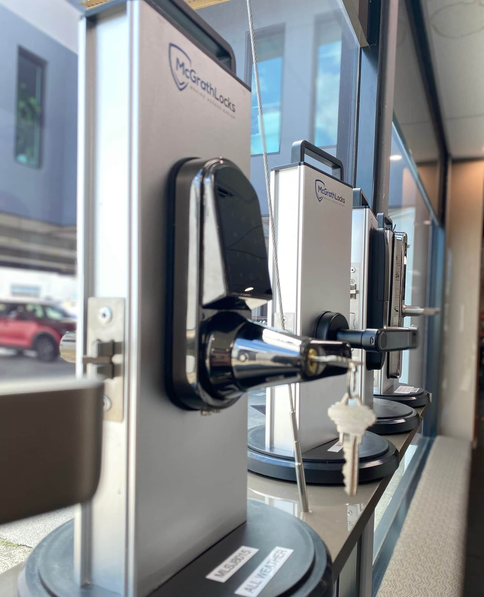

On this page
AT A GLANCE
When a lock fails, keys go missing or a commercial property is compromised, the first few hours set the tone for everything that follows.
When a lock fails, keys go missing or a commercial property is compromised, the first few hours set the tone for everything that follows. Having trained support physically on-site turns a confusing, high-pressure moment into a clear plan. An experienced
commercial locksmith on the Gold Coast can secure vulnerable access points, assess immediate risks and help restore control quickly, so business owners, facility managers and staff aren't left making unfamiliar security decisions under pressure.
Why Urgent Security Situations Feel So Overwhelming for Businesses
Security incidents rarely happen at a convenient time. A manager might arrive early to find signs of an attempted break-in. A staff member could lose a master key on a Friday afternoon, or a front-door lock might fail just as a retail store is closing.
The hard part isn't only the broken lock or missing key. Someone also has to work out who can still access the premises, whether other entry points are secure, how staff and customers should move through the site and what temporary measures are needed.
The pressure builds when several people need answers at once. Employees want to know if it's safe to enter, management wants a reopening time, and police, insurers or building management may all need information. Without a clear point of focus, decisions get rushed and mistakes become more likely.
What On-Site Security Support Looks Like for Commercial Sites
Phone advice can help with simple questions, but most urgent security problems need someone physically present. On a commercial site, on-site support usually means a qualified locksmith or electronic security technician attending to:
- Inspect damaged doors, frames and locking hardware
- Identify signs of forced entry or tampering
- Decide whether a lock can be repaired or needs replacing
- Check access control credentials, readers and electrified door hardware
- Put temporary measures in place while parts are sourced
Picture a warehouse supervisor who finds that an external door no longer latches after an attempted break-in. Telling staff to avoid that entrance doesn't remove the vulnerability. A technician on-site can inspect the door and locking system, apply a temporary or permanent fix and return the entrance to a secure condition.
For incidents outside business hours, 24/7 emergency locksmith support reduces the time a site sits exposed while everyone waits for help.
Fast Assessment and Immediate Action When Every Minute Counts
The first priority during an urgent callout is understanding what happened and stopping the situation from getting worse. A thorough assessment looks beyond the most obvious damage. The door, frame, cylinder, strike, hinges and surrounding access points may all need checking to find the real source and extent of the problem.
Depending on the incident, practical steps may include:
- Repairing or replacing damaged locking hardware
- Rekeying locks after keys are lost or stolen
- Restricting access to compromised areas
- Checking whether other doors share the same key or credential
- Restoring safe access for authorised people
- Flagging weaknesses that need follow-up work
This structured approach turns uncertainty into a defined set of actions. Staff know what's secure, what's off-limits and what happens next.
How a Visible Security Presence Deters Escalation
Visible security activity can discourage further interference with a property. A marked service vehicle, active repair work and newly fitted hardware all signal that a vulnerability has been spotted and is being dealt with. That matters after break-ins and vandalism, when leaving obvious damage unattended can invite a second attempt.
Physical presence is especially useful when a building can't immediately return to normal security arrangements. A technician may need to set up temporary controls while replacement hardware arrives or a damaged entrance stays out of service.
For higher-risk sites, locksmithing works best alongside CCTV, alarm monitoring, patrol services and access control. Each layer covers a different part of site security, so the property isn't relying on a single lock or system.
Supporting Emergency Services, Incident Reporting and WHS Procedures
A security incident often involves several parties. Police may be responding to a break-in, building management needs updates, an insurer may want documentation and internal WHS procedures may control how staff access affected areas.
A locksmith or security technician doesn't replace emergency services. Their role is to handle the physical and electronic security issues within their expertise while respecting any instructions or restrictions set by responders.
Good incident management also relies on clear records. Businesses should note when the problem was discovered, which entrances were affected, what temporary measures were used and what repairs followed. Clear procedures like these play a major role in workplace safety compliance, helping businesses meet their WHS obligations even under pressure.
Regaining Control of Your Site With Keyless Entry and Access Control
Fixing the immediate problem is only part of the job. The next question is how to reduce the chance or impact of it happening again.
Lost keys are a simple example. Rekeying the affected locks solves today's concern, but a business with frequent staff turnover or many keyholders may benefit from rethinking how access is managed altogether.
Many businesses are installing keyless entry systems Gold Coast wide so access can be locked down or revoked instantly during an emergency. Depending on the system, administrators can issue individual credentials, set access zones and cancel a lost card or fob in moments, without recovering and replacing physical keys.
If you're weighing up whether
keyless entry systems suit your premises, consider how they perform when fast access control matters most. The right solution depends on the property, door construction, number of users and existing security infrastructure. The aim isn't adding technology for its own sake, but creating access arrangements that are practical to manage and suited to the site's risks.
Letting Owners and Staff Focus on Safety Instead of Rushed Decisions
One of the biggest benefits of professional on-site support is that staff don't have to become security technicians during an emergency.
A store manager dealing with a broken front-door lock may already be juggling staff, customers, deliveries and head office. Asking them to choose a replacement cylinder or access control fix adds a technical decision at exactly the wrong moment.
An experienced technician can explain the options and the practical trade-offs of each, giving the person in charge enough information to decide without diagnosing the fault themselves. That frees managers to focus on what can't be delegated: accounting for staff, looking after customers, communicating with stakeholders and deciding whether it's safe to keep operating.
Why a Commercial Locksmith on the Gold Coast Is a Smart Emergency Partner
A calm response to a security incident comes from clear priorities and the right expertise. Working with a commercial locksmith on the Gold Coast before anything goes wrong means you already have a team that knows your site, your locking systems and your access control setup. When an incident happens, they can move straight to securing the premises instead of starting from scratch.
The best emergency support does more than fix the immediate fault. It restores control now and identifies practical improvements that leave your business better prepared next time.
SPL Security Solutions provides Master Locksmith and electronic security services for businesses across the Gold Coast, Brisbane and Northern NSW, with 24/7 emergency assistance available. Whether you need urgent help, lock upgrades, access control or a broader security review, call (07) 55 888 111 to talk with the team.
Faqs
-
What should a business do if a commercial lock fails after hours?
Keep people away from any area that cannot be secured and contact an emergency locksmith for assistance. Avoid improvised repairs that could damage the door or locking hardware further, particularly if the entrance protects valuable stock, equipment or restricted areas.
-
Should commercial locks be changed after keys are stolen?
The affected access points should be assessed promptly. Depending on the locking system, rekeying may prevent the missing key from operating the lock without requiring replacement of the entire lock assembly.
-
Can a locksmith secure a business after an attempted break-in?
A commercial locksmith can assess damaged locks and doors and address security vulnerabilities within the scope of the locksmithing work required. If the incident involves a crime or immediate danger, contact emergency services first and avoid disturbing areas that police need to examine.
-
Are keyless entry systems suitable for commercial properties?
Keyless access can suit offices, warehouses, retail premises and other commercial environments where businesses need tighter control over individual access. The appropriate system depends on factors such as the number of users, required access zones, door hardware and existing security infrastructure.
-
How can businesses prepare for security emergencies?
Maintain current emergency contact details, document who has authority to approve urgent security work and review how keys and access credentials are controlled. Regular maintenance of locks, doors, alarms and access systems can also identify problems before they become urgent failures.
-
What does an emergency commercial locksmith check on-site?
The assessment depends on the incident but may include the lock, cylinder, door, frame, strike and other relevant access points. Where necessary, the locksmith can identify immediate repairs or rekeying requirements and recommend follow-up security improvements.









